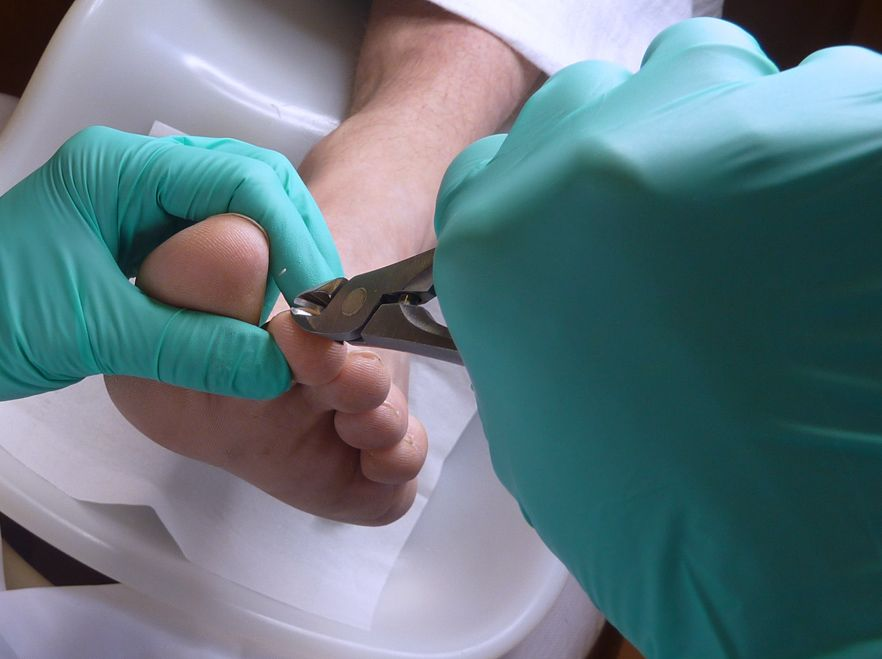
Pedicurebehandeling
Nagels knippen en frezen, eelt en likdoorns verwijderen en kloven verzorgen. We sluiten af met een lichte voetmassage met verzorgende crème.
€ 35Meer info
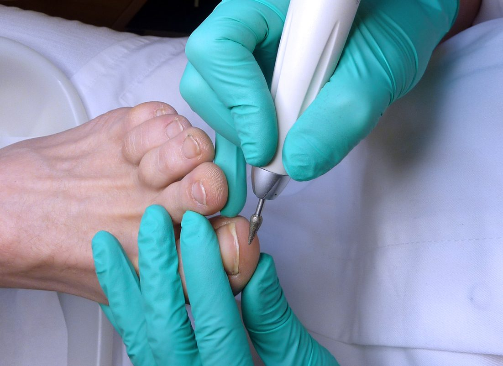
Gediplomeerd medisch pedicure in Roosendaal. Ook voor diabetische en reumatische voeten, met vergoeding via de podotherapeut.
Alle behandelingen zijn op afspraak, in een salon die is ingericht volgens de code van de voetverzorging.

Nagels knippen en frezen, eelt en likdoorns verwijderen en kloven verzorgen. We sluiten af met een lichte voetmassage met verzorgende crème.
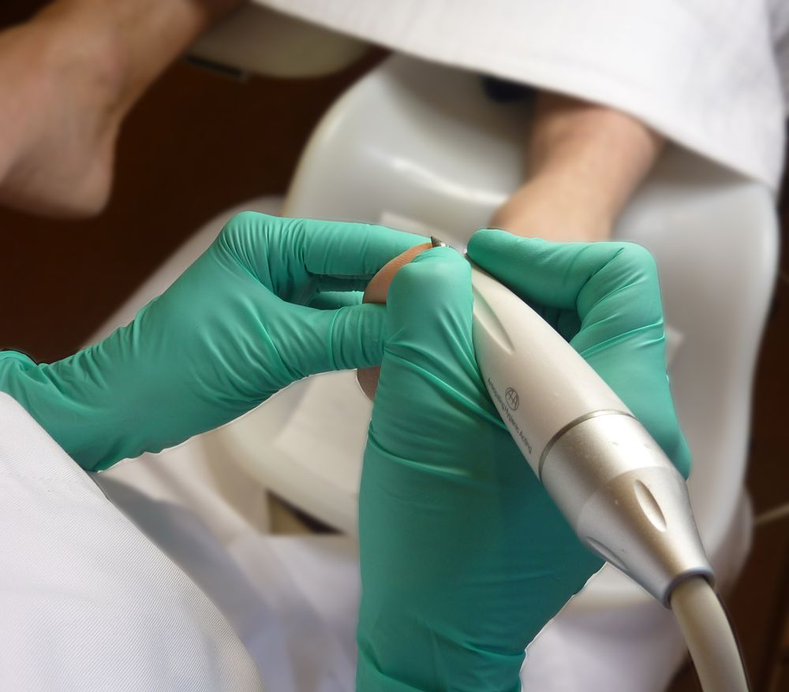
Als medisch pedicure mag ik alle risicovoeten behandelen, bijvoorbeeld bij diabetes, reuma, spasticiteit of ouderdom. Met extra kennis van wat uw voeten dan nodig hebben.
Een orthese op maat ontlast drukplekken aan en tussen de tenen en helpt de teenstand te reguleren, bijvoorbeeld bij hamertenen.
Vanaf € 12,50Een beugel van metaal of kunststof die de nagel weer in de juiste vorm brengt, zodat hij niet meer in de nagelwal groeit.
€ 17,50Bij hevige drukpijn aan de tenen of de voet geeft vilt direct verlichting.
Op afspraakEen beschadigde nagel herstellen met gel of acryl.
€ 15,00In 2017 rondde ik de opleiding tot sportpedicure af.
Op afspraakLos of in combinatie met een voetbehandeling.
Vanaf € 20,00Ik heb met alle podotherapeuten in Roosendaal een contract. Daardoor kan uw behandeling (gedeeltelijk) vergoed worden.
Uw huisarts bepaalt uw simmsclassificatie: hoe groot het risico op voetproblemen is.
Na een bezoek aan de podotherapeut krijgt u een zorgprofiel. Dat bepaalt welke vergoeding u krijgt.
Diabetische voetbehandelingen worden vanaf zorgprofiel 2 (gedeeltelijk) vergoed, na toestemming van de podotherapeut.
Uw zorgverzekeraar vergoedt alleen als de pedicure een contract heeft met uw podotherapeut. Twijfelt u of u in aanmerking komt? Bel gerust, dan zoeken we het samen uit.
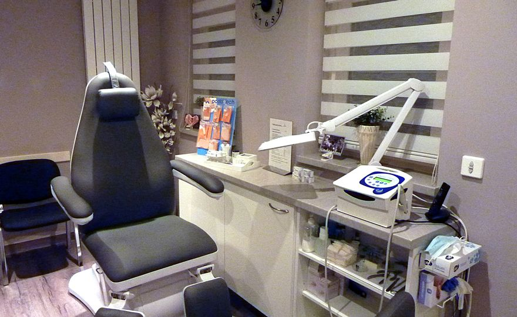
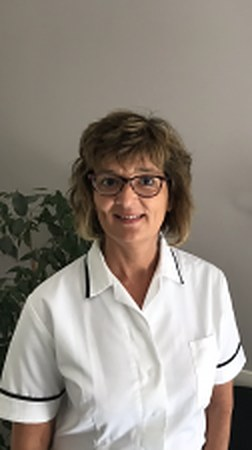
Als gediplomeerd pedicure ben ik aangesloten bij ProVoet en geregistreerd in het KRP, het kwaliteitsregister voor pedicures. Daarvoor blijf ik me bij- en nascholen, zodat mijn kennis up-to-date is.
In 2013 haalde ik mijn diploma medisch pedicure, in 2017 volgde de opleiding tot sportpedicure. Ik werk volgens de code van de voetverzorging: duidelijke richtlijnen voor hygiëne en milieu.
"Pijnlijke voeten zijn niet normaal. De meeste voetproblemen zijn op te lossen."
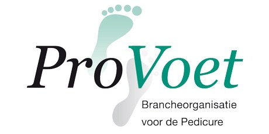
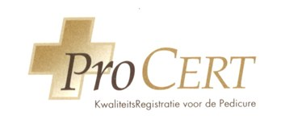
In 2014 helemaal verbouwd en aangepast aan de eisen van de code van de voetverzorging.
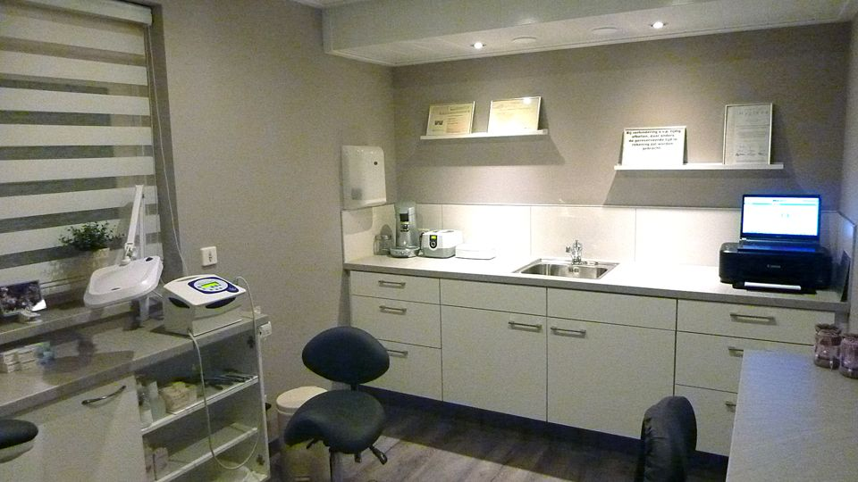
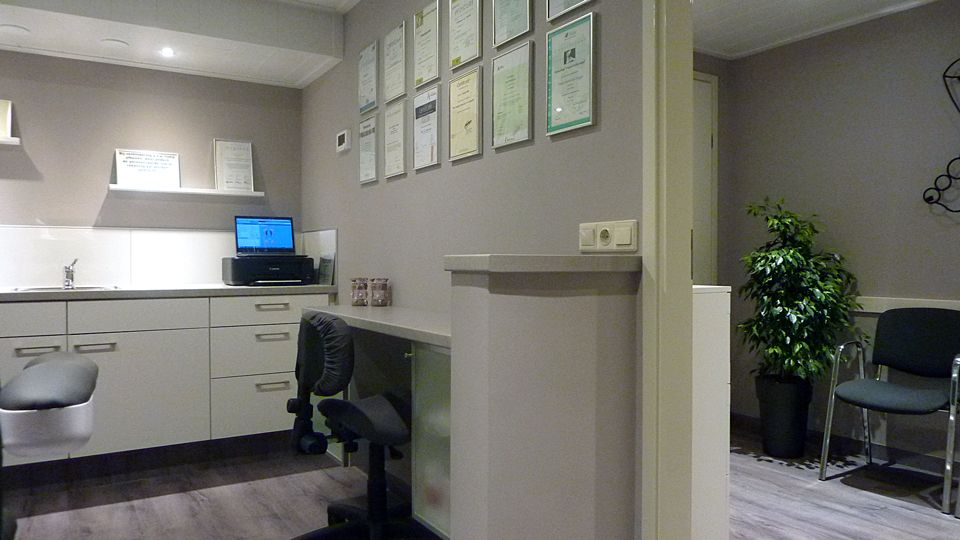
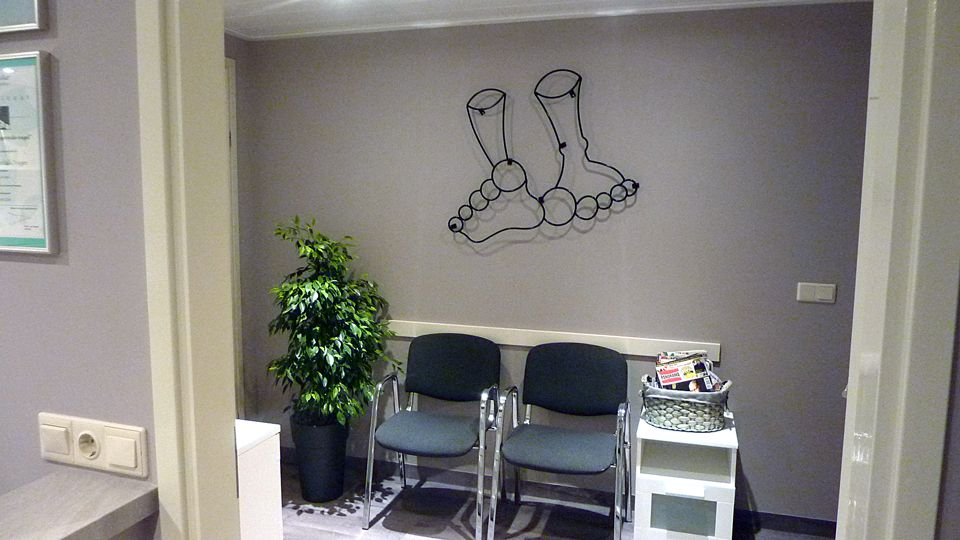
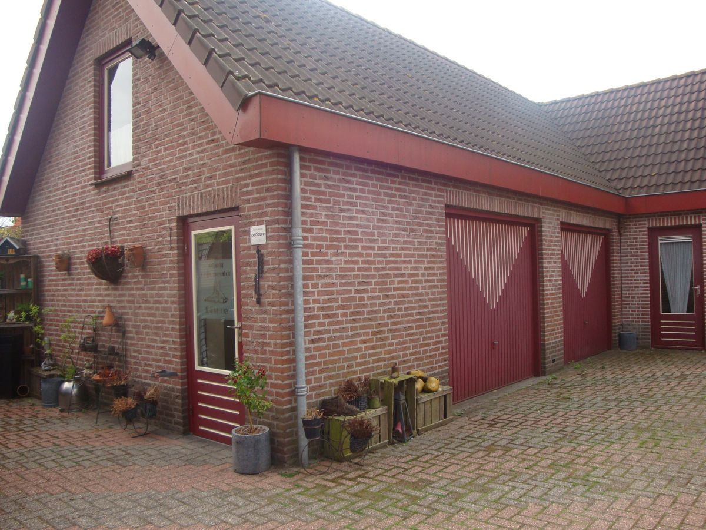
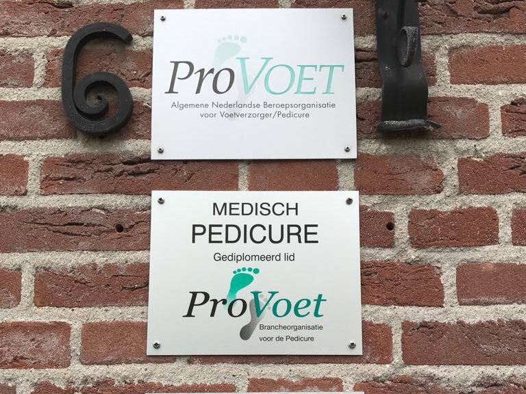
Voor uw afspraakWilt u alvast zelf de nagellak verwijderen? En gebruik bij likdoorns geen likdoornpleisters.
Verhinderd?Zeg uw afspraak minimaal 24 uur van tevoren af. Anders wordt de behandeling in rekening gebracht.
CadeaubonLeuk om te geven, nog leuker om te krijgen. Verkrijgbaar in de salon.
Heeft u een vraag of wilt u een afspraak maken? Bel gerust of stuur een e-mail, dan hoort u snel van mij.
ProVoet nr. 2328 · KRP nr. 269
AGB-code 96001024 · KvK 20167534